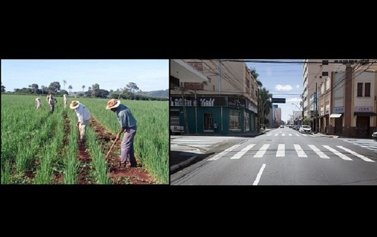

campo e cidade uma conecção eterna
A conexão entre campo e cidade é fundamental para o desenvolvimento do Brasil. O campo produz os alimentos essenciais, enquanto a cidade é o centro do consumo e inovação. Essa relação fortalece a economia e promove o bem-estar social.
